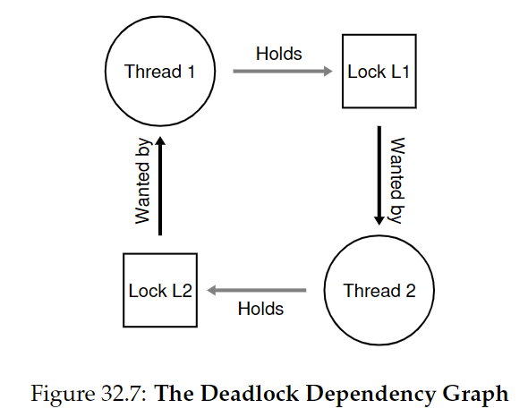

32.Common Concurrency Problems
并发任务会引发许多bug，分为死锁bug和非死锁bug。
CRUX：如何处理并发bug
32.2 Non-Deadlock Bugs
非死锁bug分为违背原子性（atomicity violation）bug和违背顺序性（order violation)bug。
Atomicity-Violation Bugs：
如下图，若线程1判断proc_info不为NULL并准备执行fputs操作时被打断，切换到线程2，将proc_info置为NULL，又切换回线程1，导致fputs出错。
解决方案是加锁来保证操作的原子性：
Order-Violation Bugs
如下图，线程2预设了mThread已经被初始化，然而若线程2先执行，会发生NULL-pointer dereference
为了保证内存访问的顺序不被反转，解决方案是使用条件变量：

32.3 Deadlock Bugs

上图是一个可能发生死锁的代码。当线程1拿到L1，然后上下文切换到线程2，线程2拿到L2，此时线程1和线程2都在等待对方释放手中的锁。

CRUX：如何处理死锁？
Why Do Deadlocks Occur?
死锁为什么会发生？
- 在大型代码库中，组件间有复杂的依赖关系。
- 封装（encapsulation），隐藏了底层细节。
Conditions for Deadlock
- Mutual exclusion: 线程宣称拥有它们所需资源的控制权（拿到锁）
- Hold-and-wait: 线程在等待额外资源时，已经持有被分配的资源。
- No preemption: 资源不能被强制移除。
- Circular wait: 存在线程循环链，每个线程持有的资源被下一个线程请求。
如果以上4个条件不满足，死锁就不会发生。因此下面来探讨防止死锁的策略。
Prevention
Circular Wait
- total ordering: 给所有锁获得的顺序排序（如只有两把锁，规定先拿L1再拿L2）。
- partial ordering: 部分排序。在大型复杂系统中更常见。如Linux中的内存映射。
Tip：可以通过锁的地址来强制规定顺序
if (m1 > m2) { // grab in high-to-low address order pthread_mutex_lock(m1); pthread_mutex_lock(m2); } else { pthread_mutex_lock(m2); pthread_mutex_lock(m1); } // Code assumes that m1 != m2 (not the same lock)
Hold-and-wait
用一个大锁包住所有锁的获取，保证其原子性
pthread_mutex_lock(prevention); // begin acquisition
pthread_mutex_lock(L1);
pthread_mutex_lock(L2);
...
pthread_mutex_unlock(prevention); // end
但是这个方案是有问题的。首先封装性导致我们不能确切地知道哪些锁应该提前获得；而且会降低并发性，因为锁会被提前获得，而不是真正需要它们的时候。
No Preemption
有时麻烦在于某个线程正在等待某个锁，然而它自己正拥有另一个锁。
使用trylock()来尝试获得某个锁，若目标锁未被持有则返回成功信息，否则返回错误。基于此可以来构建一个deadlock-free, ordering-robust lock acquisition protocol:
top:
pthread_mutex_lock(L1);
if (pthread_mutex_trylock(L2) != 0) {
pthread_mutex_unlock(L1);
goto top;
}
可能会出现livelock的情况，两个线程重复以上过程并重复地失败，这种情况极其罕见。解决办法是可以在重新循环时加一个随机的delay。
此外由于封装的问题，跳回开头的实现很复杂。
注意到这种办法并没有真正添加一个preemption（强制拿走一个线程的锁），而是使用trylock让一个线程放弃锁。
Mutual Exclusion
由于critical section的存在，我们不可能避免mutual exclusion。但是我们可以使用lock-free的办法，利用硬件指令构建数据结构，避免显式利用锁。（详见28节）
例如之前提到的CompareAndSwap方法：
int CompareAndSwap(int *address, int expected, int new) {
if (*address == expected) {
*address = new;
return 1; // success
}
return 0; // failure
}
void AtomicIncrement(int *value, int amount) {
do {
int old = *value;
} while (CompareAndSwap(value, old, old + amount) == 0);
}
这样我们就可以改写会导致race condition的代码：
Deadlock Avoidance via Scheduling
如果我们知道全局信息，就可以采用提前调度的办法分配锁，来保证死锁不会出现。
不过这种办法应用场景有限，而且会限制并发性。
Tom West's Law: Don't always do it perfectly.
Detect and Recover
如果出现死锁的情况很罕见，则可以允许它的存在，设置detector，当出现死锁重启系统。常见于数据库系统。